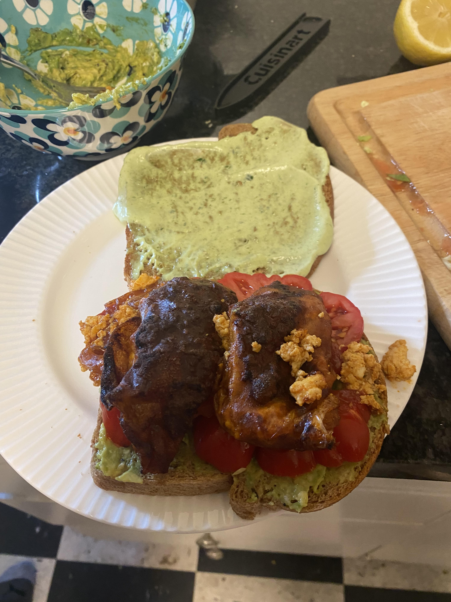

Vegan Bacon
\

Sometimes your stomache just wants a sandwich and there are few sandos on my list
that can even be compared to a nice BAT. Before I went vegan I did not particularly
enjoy BLT's, whether it was because they were not very healthy or that I tought of
bacon as a breakfast exclusive, but after this sandwhich... lemme tell you. I was a
changed man. The avacodo, bacon, heirloom tomato, and lemon basil all sing together in
harmony and the sauce used for the bacon is so good it's hard not to just drink plain.
This is a quick and easy recipe and if you're like me having this with a side of chips
is the way to go.
What We Will Need
- 1/4 C Maple Syrup
- 1 garlic bulb, roasted with 1 tsp oolive oil +pinch sea salt
- 1/4 C water
- 1 tbsp coconut oil
- 3/4 C raw whole cashews, soaked for 20 min in hot water
- 1 garlic bulb, roasted with 1 tsp oolive oil +pinch sea salt
- 1/4 C water
- 1 tbsp coconut oil
- 3/4 C raw whole cashews, soaked for 20 min in hot water
- 1 garlic bulb, roasted with 1 tsp olive oil +pinch sea salt
- 1/4 C water
- 1 tbsp coconut oil
Time to Cook!
- To roast the garlic bulb, preheat oven to 425°F. Trim about a 1/4“ off the top of the
bulb to expose the cloves. Drizzle with a teaspoon of olive oil and a pinch of sea salt.
Bake for 30 to 35 minutes until roasted, golden brown, and soft on the inside.
- Rinse and drain the soaked cashews. Add to a high-powered blender with the roasted cloves
of garlic, water, coconut oil, and sea salt. Blend until very smooth and refrigerate
to firm up a little bit more like a whipped butter.
- Toss whole potatoes in 1 tablespoon of olive oil, fresh thyme, sea salt, and ground black
pepper. Bake in an oven preheated to 450°F for 20 minutes.
- Smash the whole potatoes with a fork or potato masher to break open the skin. Drizzle
with another 2 teaspoons of olive oil and place whole thyme sprigs on top so they can
crisp up as well. Bake again for another 10 to 12 minutes until crispy.
- Serve immediately with a dollop roasted garlic cashew butter on each potato.